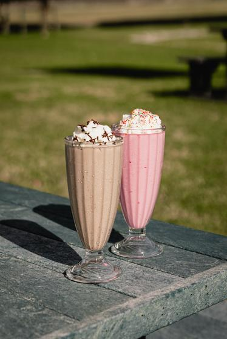
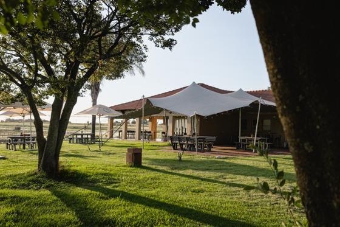
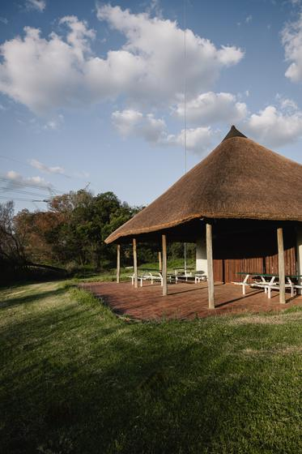
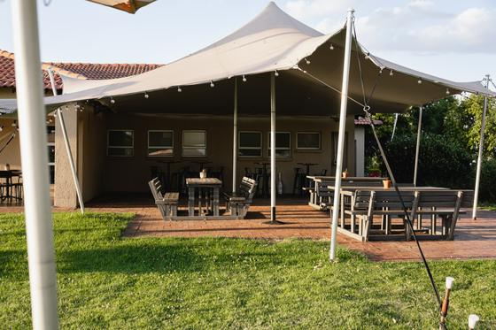
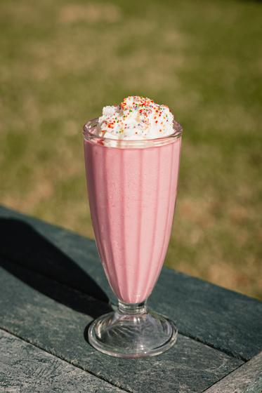
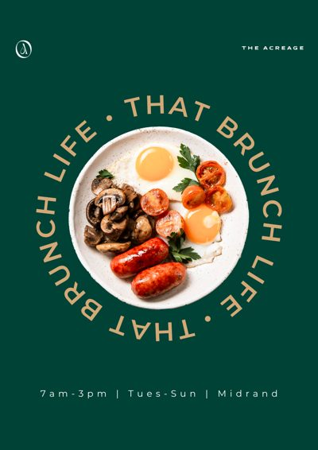

Beautiful photographs of the place, and very few of it in use.
The February shoot and the restaurant launch interiors give The Acreage close to 400 professional photographs, and they are genuinely good. Alongside them are about a hundred phone photos of family days, match days, markets and set-ups, and over two hundred photos from past functions that have never been posted. What is still missing is people enjoying breakfast on the lawns, your own dogs, and video with sound, which is what social media and advertising respond to most.
This page sets out three things: the design templates we will build, one half-day photo shoot to fill the gaps, and a short daily habit on a phone. Then the shapes everything needs to be in, drawn to scale, and what the advertising specifically needs.
What 1080 by 1350 actually looks like.
Every platform crops to a particular shape. The numbers are width by height in pixels, and the proportions below are true to each other, so you can see how much taller a vertical frame is than a square one.
 1080 × 10801080 × 1350
1080 × 10801080 × 1350
1080 × 1920
1920 × 1080
1200 × 628
1920 × 1005Drawn at 14 percent of real size. Every shape above uses a real photograph from your library.
Why portrait beats square in a feed
The same photograph, posted two ways, on the same phone. The 4:5 version takes about a quarter more of the screen as someone scrolls past, which is why every feed post and feed ad in the plan is 4:5.
Where text can and cannot go on a Story or Reel

- On a 1080 by 1920 frame, keep the top 250 pixels and the bottom 670 pixels free of anything that has to be read.
- Leave about 65 pixels clear on each side.
- The photograph itself can run edge to edge. Only words, prices and the logo need to stay inside the dashed area.
- Every Story and Reel template we build will have this area marked, so nobody has to remember the numbers.
Why we ask for everything to be shot vertically
Landscape to vertical. The white frame is all that survives in a Story or Reel. For drone footage and wide lawn shots, that loses exactly what made them worth taking.
Vertical to portrait or square. A vertical photo trims neatly to 4:5 for the feed or 1:1 for a carousel.
A vertical photograph can become any format. A landscape one can never become a good Story. When in doubt, turn the phone upright.
The design templates we will build.
Built once, in The Acreage's colours and logo, and handed over, so a post can be put together in a few minutes by someone who is not a designer. Your existing nineteen templates already have the right look, so we will build from those rather than start again.
Your templates, and the shapes they need to become
The current templates are 1414 by 2000, the proportions of an A4 page. Drawn to the same scale as above, here is how that compares with the two shapes social media actually uses.

1414 × 2000So each template gets re-set in both shapes rather than stretched. While we do that, four small things to settle with you:
- Your own photographs in place of the sample ones. A few templates use generic photographs, such as the teal coffee cups, the cast-iron pans, the barista in Staff Spotlight and the booth seating in We're Hiring. We will swap in photographs of The Acreage.
- The hours. The templates say 7am to 3pm, and Facebook says the kitchen closes at 15:30. Which is right?
- The editable files. We have the finished images. If they were made in Canva, sharing the Canva designs saves rebuilding them from scratch.
- The fonts. Canyon and Pinklatte, the two display fonts in the brand folder, are the free versions, which are licensed for personal use only. Social media and advertising count as commercial use, so either a commercial licence is bought for each (both are inexpensive) or we use Montserrat, already in the folder and free for commercial use, with a licensed script font for headlines.
| Template | Format | Used for |
|---|---|---|
| Menu carousel | 4:5 · 1080 × 1350 | The food menu, drinks menu and catering menus as readable slides. |
| Spaces and capacity carousel | 4:5 · 1080 × 1350 | Every space and how many guests it holds, from the restaurant to the whole estate. |
| Offer card | 4:5 and 1:1 | Weekly offers, specials, Christmas lunch, gift vouchers. The price is the headline. |
| Function showcase | 4:5 · 1080 × 1350 | Real functions, with the space and the headcount always in the layout. |
| Story set | 9:16 · 1080 × 1920 | Today on the estate, clear and rainy-day versions, offer of the day, countdowns, and "we're open". Safe area marked. |
| Reel covers and end frames | 9:16 · 1080 × 1920 | A title at the start and a call to action at the end, so a phone clip becomes a finished Reel. |
| Event invitation set | 4:5, 9:16 and 1920 × 1005 | The Open Day: an invitation, a save-the-date, a Story and the Facebook Event cover. |
| Logo pack | SVG and PNG | Built from the vector logo and colour versions in your brand folder, plus the monogram on its own and a profile icon for each platform. The WhatsApp profile icon is already done. |
One half-day shoot, on a busy Saturday.
Booked for Saturday 19 September, weather permitting. The photographer's brief, with the timings, the full shot list and a checklist for the day, is here: jcereports.netlify.app/clients/acreage/shoot-brief/
Half a day with a photographer, photographing people, food at the table, and the lawn at sunset. It closes the gaps in one go, and we would brief and direct it. The format column shows which shapes each shot has to work in; shots marked "Also for ads" are the ones the advertising depends on. Five of the thirty are children and dogs shot from a distance or from behind, so they need no release and can still be used in advertising. Wherever a frame is marked "Video too", ten seconds of it filmed upright is worth as much as the photograph, and often more.
Permission matters. Anyone recognisable needs to agree to be photographed, and a short signed release is best, especially for anything used in paid advertising. Staff should be covered by their employment terms, but it is worth checking. Backlit and silhouette shots keep this simple.
Ten minutes a day, on a phone.
The part only the team at The Acreage can do, because you are there. Deliberately short, so it actually happens.
- Every trading morning: one photo of the estate as it is right now, clear sky or not. Posted as a Story before eight.
- Twice a week: whatever is coming out of the kitchen, with a hand in the frame.
- Every weekend: one dog, one family, one full table. Ask first.
- Whenever a function is on: the room dressed before guests arrive, and one wide shot of it full, with the client's permission.
- Any good sunset: ten seconds of video, held steady, phone upright, with the sound on.
What the ads need, campaign by campaign.
Ads need more variety than posts, because the same people see them repeatedly and an ad that has been seen too often stops working. Each campaign runs three to five different versions at a time, and they are replaced every two to three weeks.
| Campaign | What it does | Visuals it needs | Formats |
|---|---|---|---|
| Tables | Brings people in for breakfast and lunch. The ad opens a WhatsApp chat. | Two short vertical videos, 6 to 15 seconds, with sound: breakfast on the lawn and coffee being made. Three dish photos with space around the plate for a price. One family or dog photo of people who have agreed to be in an ad. | 9:16 video · 4:5 photos |
| Functions | Brings in wedding, year-end and corporate enquiries through a short form. | A dressed function space with guests in it, from a real event with the client's permission. The past functions in your Dropbox, such as the tents lit at night and the restaurant full for a year-end, are exactly this, if those clients agree. Wide shots that show scale. A 10 to 15 second walk-through video of one space. A cover image for the enquiry form. | 4:5 · 9:16 · form cover 1200 × 628 |
| Warm | Speaks again to people who have already watched, visited or engaged. | Offer-specific designs built from the templates: the Open Day invitation, Christmas lunch, gift vouchers. These use existing photographs and need no new shoot. | 4:5 · 9:16 · event cover 1920 × 1005 |
Rules the ad visuals have to follow
- The first three seconds decide it. A video opens on the most striking moment, not a logo or a slow reveal.
- Most people watch without sound, so every video carries on-screen words, and sound is a bonus for those who turn it on.
- Keep the words short. A headline and a price. Ads with less text on the image generally do better.
- Only photographs The Acreage owns. Photos saved from other people's Instagram accounts can never be used in an ad.
- Recognisable guests need written permission before they appear in paid advertising, even if they were happy to be in an ordinary post.
- Vertical and 4:5 versions of everything, because one ad is shown in the feed, in Stories and in Reels, and each crops differently.
The shoot list above is weighted towards the ads on purpose. The advertising is where the new photographs earn their cost back, so every "Also for ads" shot is worth getting right.
Splitting the work.
| Piece | Who | Detail |
|---|---|---|
| Brand look and templates | JCE Media | Colours, type, layouts and every template listed above, built so the team can use them. |
| The shot list and briefing | JCE Media | This list, plus briefing the photographer and being there on the day. |
| Ad designs | JCE Media | Every ad version, built from whatever photographs and video exist, and refreshed as they tire. |
| The half-day shoot | Together | The Acreage books the photographer and the date; we brief and direct. |
| Daily phone photos | The Acreage | Ten minutes a day against the list above. |
| Permissions | The Acreage | Guests, function clients and staff agreeing to be photographed and, for ads, signing a release. That includes the past functions in the "Events Not Posted" folders. |
| Files | The Acreage | The full-resolution originals from the February shoot, the raw drone footage, and the editable versions of the social media templates. |